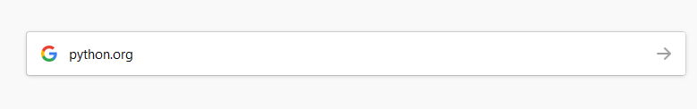
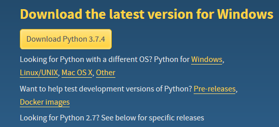
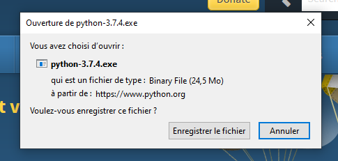
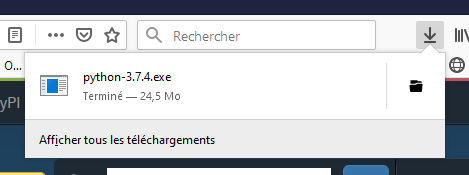
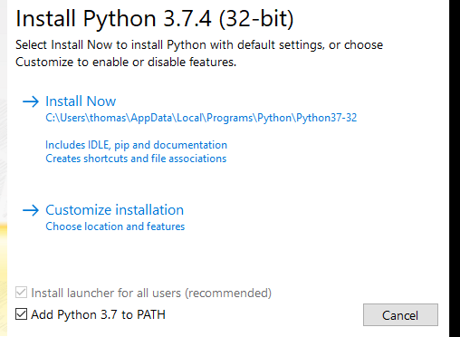
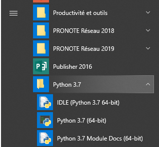

1) rechercher python.org sur le web

2) cliquer sur Download Python
3) cliquer sur Download Python 3.7.4
Remarque n°1: Si vous utilisez autre chose que windows alors vous sélectionnez le bon OS
Remarque n°2 : Si les nombres ne sont pas 3.7.4 ce n'est pas grave, c'est qu'une nouvelle version est disponible

4) Cliquez sur Enregistrer le fichier

5) En haut, à droite de la fenêtre firefox :
- cliquez sur la flèche descendante
- puis sur python-3.7.4.exe

6) installer quand même si la question est posée par windows...
7) Cochez la case Add python 3.7 to path puis Install now

8) Dans le menu windows, sélectionnez IDLE( Python 3.7...)

9) Vous savoir comment utiliser Python c'est ici !